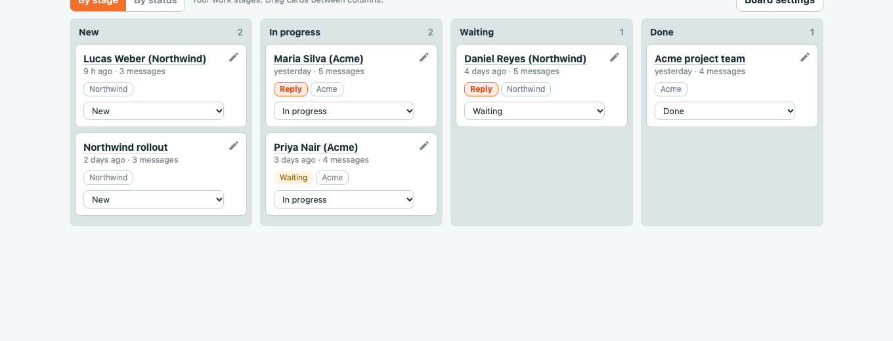
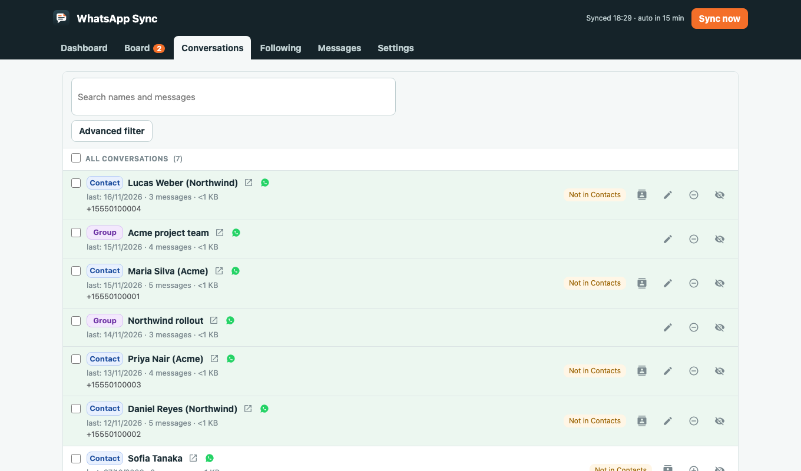
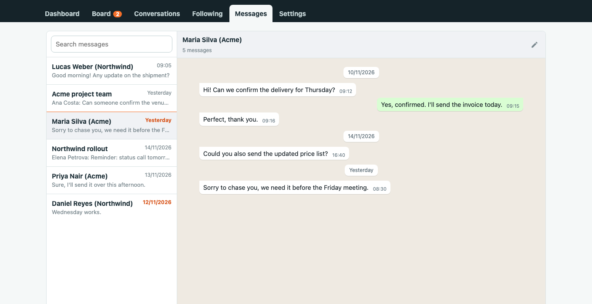

From a chat to a file
Each followed conversation becomes one Markdown file. It updates by itself when new messages arrive.
# WhatsApp — Maria Silva (Acme) [10/11 09:12] Maria: Hi! Can we confirm the delivery for Thursday? [10/11 09:15] You: Yes, confirmed. I'll send the invoice today. [10/11 09:16] Maria: Perfect, thank you.
Illustration with made-up names and messages.
What it does for you
You choose what to save
Search all of your WhatsApp and click Follow on the chats that matter. Everything else stays untouched.
Organized by topic
Create topics such as a customer or a partner, pick a folder for each, and add keywords that suggest where a chat belongs.
Context ready for Claude
Plain Markdown is the format Claude reads best. Point it at the folder and it has the history.
Nothing falls through
The dashboard shows who is waiting for your reply and how fast you and others respond.
A look inside
Dashboard
Totals, conversations waiting for your reply, response times and a chart of daily activity. Reorder or hide widgets to fit your routine.
Board
Followed conversations as cards. Drag them across your own stages, or group them by status.

Conversations
Search every chat by name or by what was said, then follow the ones you want. Followed chats are highlighted.

Messages
Read the followed conversations in a familiar chat layout and search inside them.

Screens show demo data, not real conversations.
Private by design
- It runs only on your Mac. No other device can reach it.
- It reads the WhatsApp for Mac database read-only. It never changes WhatsApp and never sends a message.
- Files are written only into folders you picked, and the app only edits or deletes files it created.
- Your settings live outside the app folder, in your own user folder.
- If a destination folder syncs to the cloud, such as Drive or iCloud, the app shows a cloud icon next to it.
What you need
A Mac with macOS 13 or newer, and WhatsApp for Mac installed and signed in. Setup takes about 10 minutes. The app asks for Full Disk Access in macOS, which is what lets it read the WhatsApp database.
Read the install guide